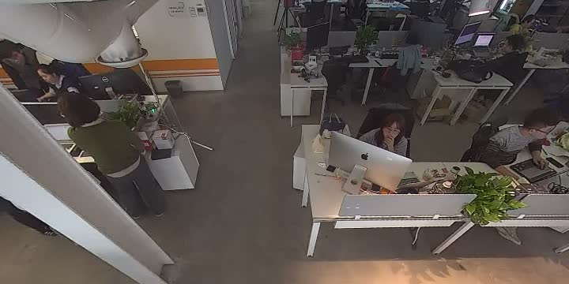

<!doctype html>
<html lang="zh-CN">
<head><meta name="generator" content="Hexo 3.9.0">
    <meta charset="UTF-8">
    <meta http-equiv="X-UA-Compatible" content="IE=11,IE=10,IE=9,IE=8">
    <meta name="baidu-site-verification" content="dIcXMeY8Ya">
    
    <title>利用FFmpeg处理鱼眼视频分成4个方向的视野画面 | 小牛试一刀</title>
    <meta name="viewport" content="width=device-width, initial-scale=1, maximum-scale=1, user-scalable=0">
    <meta name="keywords" content="Anthony, 刘经济, 技术博客, 个人博客, PHP, Golang, Linux, FullStack">
    <meta name="description" content="待人以儒墨，不热爱前端技术的后端开发不是一个好的吃货。">

    
    <link rel="alternative" href="/atom.xml" title="小牛试一刀" type="application/atom+xml">
    
    
    <link rel="shortcut icon" href="/favicon.ico">
    
    <link rel="stylesheet" href="/css/style.css">
    <!--[if lt IE 9]>
    <script src="/js/html5.js"></script>
    <![endif]-->
    
<script>
var _hmt = _hmt || [];
(function() {
  var hm = document.createElement("script");
  hm.src = "https://hm.baidu.com/hm.js?d5ebf515ab530cfbdda5f5c85093fb41";
  var s = document.getElementsByTagName("script")[0]; 
  s.parentNode.insertBefore(hm, s);
})();
</script>


</head>
</html>
<body class="home">
    <!--[if lt IE 9]>
    <div class="browsehappy">
        当前网页 <strong>不支持</strong>
        你正在使用的浏览器. 为了正常的访问, 请 <a href="http://browsehappy.com/">升级你的浏览器</a>.
    </div>
    <![endif]-->

    <!-- 博客头部 -->
    <header class="header">
    <section class="container header-main">
        <div class="logo">
            <a href="/">
                <div class="cover">
                    <span class="name">小牛试一刀</span>
                    <span class="description">斯人笔记本</span>
                </div>
            </a>
        </div>
        <div class="dropnav icon-paragraph-justify" id="JELON__btnDropNav"></div>
        <ul class="menu hidden" id="JELON__menu">
            
            <li rel="/posts/32c4930.html" class="item ">
                <a href="/" title="首页" class="icon-home">&nbsp;首页</a>
            </li>
            
            <li rel="/posts/32c4930.html" class="item ">
                <a href="/about/" title="关于" class="icon-about">&nbsp;关于</a>
            </li>
            
            <li rel="/posts/32c4930.html" class="item ">
                <a href="/comment/" title="留言" class="icon-comment">&nbsp;留言</a>
            </li>
            
        </ul>
        <div class="profile clearfix">
            <div class="feeds fl">
                
                
                <p class="links">
                    
                        <a href="https://github.com/haowanxing" target="_blank">Github</a>
                        |
                    
                </p>
                <p class="sns">
                    
                        <a href="http://weibo.com/u/2214092525" class="sinaweibo" target="_blank"><b>■</b> 新浪微博</a>
                    
                        <a href="https://www.facebook.com/imsry.cn/" class="qqweibo" target="_blank"><b>■</b> Facebook</a>
                    
                    <a href="javascript: void(0);" class="wechat">
                        <b>■</b>
                        公众号
                        <span class="popover">
                            
                            <i class="arrow"></i>
                        </span>
                    </a>
                </p>
                
            </div>
            <div class="avatar fr">
                
            </div>
        </div>
    </section>
</header>


    <!-- 博客正文 -->
    <div class="container body clearfix">
        <section class="content">
            <div class="content-main widget">
                <!-- 文章页 -->
<!-- 文章 -->
<article class="post article">
    <header class="text-center">
        <h3 class="post-title"><span>利用FFmpeg处理鱼眼视频分成4个方向的视野画面</span></h3>
    </header>
    <p class="post-meta text-center">
        刘经济 发表于
        <time datetime="2021-03-11T06:02:54.000Z">2021-03-11 14:02:54</time>

        <!-- 不蒜子统计 -->
        <span id="busuanzi_container_page_pv" style='display:none'">
              <i class="icon-smile icon"></i> 阅读数：<span id="busuanzi_value_page_pv"></span>次
        </span>


    </p>
    <div class="post-content">
        <h2 id="介绍"><a href="#介绍" class="headerlink" title="介绍"></a>介绍</h2><p>首先，FFmpeg是一套可以用来记录、转换数字音频、视频，并能将其转化为流的开源计算机程序。它的功能强大，这里就不多做阐述了。</p>
<p>本次实验主要是为了学习FFmpeg的Filter功能，它提供了很多音视频的特效处理，比如：视频的缩放、翻转、叠加等等。常用的Filter有：</p>
<ul>
<li>Scale：画面的缩放</li>
<li>Overlay：画面的叠加</li>
<li>Crop：画面的裁剪</li>
<li>More：<a href="http://ffmpeg.org/ffmpeg-filters.html" target="_blank" rel="noopener">查看更多</a></li>
</ul>
<p>我们可以通过命令查看全部Filter的简介：</p>
<figure class="highlight bash"><table><tr><td class="gutter"><pre><span class="line">1</span><br></pre></td><td class="code"><pre><span class="line">ffmpeg -filters</span><br></pre></td></tr></table></figure>
<h2 id="实验"><a href="#实验" class="headerlink" title="实验"></a>实验</h2><h3 id="原始材料"><a href="#原始材料" class="headerlink" title="原始材料"></a>原始材料</h3><p>我们手里现在有一段鱼眼镜头录制的视频源文件，命名：<code>original.mp4</code>。我们先来看看它长什么样子：</p>
<p></p>
<h3 id="尝试球形转方形"><a href="#尝试球形转方形" class="headerlink" title="尝试球形转方形"></a>尝试球形转方形</h3><p>这一步，我暂时还没找到一个很好的方法把其展平成一个广角镜头全景的画面，但是我使用v360这个filter通过不断修改参数，得到了一个比较满意的部分画面的方形画面。</p>
<p>该Filter的基本参数格式如下：</p>
<figure class="highlight bash"><table><tr><td class="gutter"><pre><span class="line">1</span><br></pre></td><td class="code"><pre><span class="line">v360=input:output:format_1:arg_name=value</span><br></pre></td></tr></table></figure>
<p>其中<code>input</code>和<code>output</code>分别是原始投影格式和目标投影格式，这里我们是从<code>鱼眼</code>视频转换为<code>常规</code>视频，所以要填入的参数为：</p>
<figure class="highlight bash"><table><tr><td class="gutter"><pre><span class="line">1</span><br></pre></td><td class="code"><pre><span class="line">v360=input=fisheye:output=flat <span class="comment"># 都有哪些投影格式，可以通过ffmpeg -h filter=v360获取查看</span></span><br></pre></td></tr></table></figure>
<p><code>format_1</code>是指具体要设置的格式，这里我并没有用到。<code>arg_name</code>和<code>value</code>指具体的参数项和值。</p>
<p>我的使用例子：</p>
<figure class="highlight bash"><table><tr><td class="gutter"><pre><span class="line">1</span><br></pre></td><td class="code"><pre><span class="line">v360=input=fisheye:output=flat:ih_fov=180:iv_fov=180:h_fov=90:v_fov=60:w=720:h=360:pitch=45</span><br></pre></td></tr></table></figure>
<p>解释一下，其中<code>ih_fov</code>和<code>iv_fov</code>分别表示设置的输入横向视野范围和输入纵向视野范围，我这里都设置为180度；<code>h_fov</code>和<code>v_fov</code>分别表示设置的输出横向视野范围和输出纵向视野范围，我这里设置横向90度，纵向60度。然后还设置了输出画面的宽高为720x360，俯仰旋转角（pitch）为45度。</p>
<p>我的个人理解（个人瞎猜），就如同人眼可接受光的范围，理论上横向和纵向都能够覆盖180度的范围，但是我们在眼球不转动的情况下，有效的水平视野大概是90度，纵向视野60度。因为这个是我具体调参的出来的个人觉得比较好的参数条件，所以不具有权威性！哈哈！</p>
<p>那么现在能输出一个什么样的画面呢？</p>
<p></p>
<p>Nice！这就已经很像一个普通摄像头的画面了。那么如何得到其它几个方向的画面呢？前面我们有提到，FFmpeg可以使画面旋转！如果我先将原始画面旋转一下，让其它几个方向的画面都转到上面，然后转换画面不就行了吗？</p>
<h3 id="画面旋转"><a href="#画面旋转" class="headerlink" title="画面旋转"></a>画面旋转</h3><p>FFmpeg有个Filter叫做<code>transpose</code>。它可以非常简单的完成画面的旋转或翻转：</p>
<a id="more"></a>
<figure class="highlight bash"><table><tr><td class="gutter"><pre><span class="line">1</span><br><span class="line">2</span><br><span class="line">3</span><br><span class="line">4</span><br><span class="line">5</span><br><span class="line">6</span><br><span class="line">7</span><br><span class="line">8</span><br><span class="line">9</span><br><span class="line">10</span><br><span class="line">11</span><br><span class="line">12</span><br><span class="line">13</span><br><span class="line">14</span><br><span class="line">15</span><br><span class="line">16</span><br><span class="line">17</span><br><span class="line">18</span><br></pre></td><td class="code"><pre><span class="line"><span class="comment"># 输入ffmpeg -h filter=transpose查一下说明</span></span><br><span class="line">Filter transpose</span><br><span class="line">  Transpose input video.</span><br><span class="line">    slice threading supported</span><br><span class="line">    Inputs:</span><br><span class="line">       <span class="comment">#0: default (video)</span></span><br><span class="line">    Outputs:</span><br><span class="line">       <span class="comment">#0: default (video)</span></span><br><span class="line">transpose AVOptions:</span><br><span class="line">  dir               &lt;int&gt;        ..FV...... <span class="built_in">set</span> transpose direction (from 0 to 7) (default cclock_flip)</span><br><span class="line">     cclock_flip     0            ..FV...... rotate counter-clockwise with vertical flip</span><br><span class="line">     clock           1            ..FV...... rotate clockwise</span><br><span class="line">     cclock          2            ..FV...... rotate counter-clockwise</span><br><span class="line">     clock_flip      3            ..FV...... rotate clockwise with vertical flip</span><br><span class="line">  passthrough       &lt;int&gt;        ..FV...... <span class="keyword">do</span> not apply transposition <span class="keyword">if</span> the input matches the specified geometry (from 0 to INT_MAX) (default none)</span><br><span class="line">     none            0            ..FV...... always apply transposition</span><br><span class="line">     portrait        2            ..FV...... preserve portrait geometry</span><br><span class="line">     landscape       1            ..FV...... preserve landscape geometry</span><br></pre></td></tr></table></figure>
<p>简单来说：</p>
<ul>
<li><code>transpose=0</code>逆时针旋转90度并纵向翻转一次</li>
<li><code>transpose=1</code>顺时针旋转90度</li>
<li><code>transpose=2</code>逆时针旋转90度</li>
<li><code>transpose=3</code>顺时针旋转90度并纵向翻转一次</li>
</ul>
<p>我们分别使用如下参数，可获得的画面：</p>
<figure class="highlight bash"><table><tr><td class="gutter"><pre><span class="line">1</span><br><span class="line">2</span><br><span class="line">3</span><br></pre></td><td class="code"><pre><span class="line"><span class="comment">#顺时针旋转90度</span></span><br><span class="line">transpose=1,v360=input=fisheye:output=flat:ih_fov=180:iv_fov=180:h_fov=90:v_fov=60:w=720:h=360:pitch=45</span><br><span class="line"><span class="comment">#得到左方镜头画面</span></span><br></pre></td></tr></table></figure>
<p></p>
<figure class="highlight bash"><table><tr><td class="gutter"><pre><span class="line">1</span><br><span class="line">2</span><br><span class="line">3</span><br></pre></td><td class="code"><pre><span class="line"><span class="comment">#逆时针旋转90度</span></span><br><span class="line">transpose=2,v360=input=fisheye:output=flat:ih_fov=180:iv_fov=180:h_fov=90:v_fov=60:w=720:h=360:pitch=45</span><br><span class="line"><span class="comment">#得到右方镜头画面</span></span><br></pre></td></tr></table></figure>
<p></p>
<figure class="highlight bash"><table><tr><td class="gutter"><pre><span class="line">1</span><br><span class="line">2</span><br><span class="line">3</span><br></pre></td><td class="code"><pre><span class="line"><span class="comment">#顺时针旋转90度2次</span></span><br><span class="line">transpose=1,transpose=1,v360=input=fisheye:output=flat:ih_fov=180:iv_fov=180:h_fov=90:v_fov=60:w=720:h=360:pitch=45</span><br><span class="line"><span class="comment">#得到后方镜头画面</span></span><br></pre></td></tr></table></figure>
<p></p>
<h3 id="画面拼接"><a href="#画面拼接" class="headerlink" title="画面拼接"></a>画面拼接</h3><p>做到上面的效果已经可以将鱼眼镜头的视频流拆分成4个不同方向的视频分别输出到4个流了，但是我还想将它们合成一个视频流，同时展示4个画面！</p>
<p>这里我们就需要用到<code>overlay</code>（画面叠加）了！</p>
<p>具体的思路如下：</p>
<ol>
<li>创建一张画布，大小为1440x720。</li>
<li>将画布分成4个区域，分别叫做<code>upperleft</code>、<code>upperright</code>、<code>lowerleft</code>、<code>lowerright</code>，并放置视频的<code>左</code>、<code>上</code>、<code>右</code>、<code>下</code>。</li>
</ol>
<p>上面用到语法叫做<code>filterchain</code>，是将一个或多个<code>filter</code>用<code>,</code>号分隔，这里还需要用到的语法叫做：<code>filtergraph</code>，是将<code>filterchain</code>用<code>;</code>号分隔。</p>
<p>最终的命令如下：</p>
<figure class="highlight bash"><table><tr><td class="gutter"><pre><span class="line">1</span><br></pre></td><td class="code"><pre><span class="line">ffmpeg -i original.mp4 -filter_complex <span class="string">"nullsrc=size=1440x720 [base]; [0:v] transpose=1,v360=input=fisheye:output=flat:ih_fov=180:iv_fov=180:h_fov=90:v_fov=60:w=720:h=360:pitch=45 [upperleft]; [0:v] v360=input=fisheye:output=flat:ih_fov=180:iv_fov=180:h_fov=90:v_fov=60:w=720:h=360:pitch=45 [upperright]; [0:v] transpose=2,v360=input=fisheye:output=flat:ih_fov=180:iv_fov=180:h_fov=90:v_fov=60:w=720:h=360:pitch=45 [lowerleft]; [0:v] transpose=1,transpose=1,v360=input=fisheye:output=flat:ih_fov=180:iv_fov=180:h_fov=90:v_fov=60:w=720:h=360:pitch=45 [lowerright]; [base][upperleft] overlay [tmp1]; [tmp1][upperright] overlay=720:0 [tmp2]; [tmp2][lowerleft] overlay=0:360 [tmp3];[tmp3][lowerright] overlay=720:360"</span> -c:v libx264 -an -y out.mp4</span><br></pre></td></tr></table></figure>
<p>叠加的步骤如下：</p>
<ol>
<li>创建一个空的画布[base]，size=1440x720</li>
<li>将输入的视频[0:v]分别通过<code>transpose</code>和<code>v360</code>转换成[upperleft]、[upperright]、[lowerlet]和[lowerright]4个流</li>
<li>将[base]和[upperleft]叠加成[tmp1]，偏移量（x=0, y=0）</li>
<li>将[tmp1]和[upperright]叠加成[tmp2]，偏移量（x=720, y=0）</li>
<li>将[tmp2]和[lowerleft]叠加成[tmp3]，偏移量（x=0, y=360）</li>
<li>将[tmp3]和[lowerright]叠加成最终视频，偏移量（x=720, y=360）</li>
</ol>
<p>最终画面展示：</p>
<p></p>
<h2 id="参考文献"><a href="#参考文献" class="headerlink" title="参考文献"></a>参考文献</h2><ul>
<li><a href="https://www.cnblogs.com/famhuai/p/10276081.html" target="_blank" rel="noopener">ffmpeg 实现多宫格效果，视频拼接合成</a></li>
<li><a href="https://www.jianshu.com/p/b16835da62ab" target="_blank" rel="noopener">FFmpeg filter的使用介绍</a></li>
<li><a href="https://www.mail-archive.com/ffmpeg-user@ffmpeg.org/msg28370.html" target="_blank" rel="noopener">Does v360 filter support dewarping circular fisheye images?</a></li>
</ul>

    </div>
    <p class="post-meta">
        <span class="post-cat">分类：
            <a class="cat-link" href="/categories/学习笔记/">学习笔记</a>
        </span>
        <span class="post-tags">
            标签：
            
    
        <a href="/tags/FFmpeg/" title="FFmpeg">FFmpeg</a>
    

        </span>
    </p>
</article>
<!-- 分享按钮 -->

  <div class="article-share clearfix text-center">
    <div class="share-area">
      <span class="share-txt">分享到：</span>
      <a href="javascript: window.open('http://service.weibo.com/share/share.php?url=' + encodeURIComponent(location.href) + '&title=' + document.title + '&language=zh_cn');" class="share-icon weibo"></a>
      <a href="javascript: alert('请复制链接到微信并发送');" class="share-icon wechat"></a>
      <a href="javascript: window.open('http://sns.qzone.qq.com/cgi-bin/qzshare/cgi_qzshare_onekey?url=' + encodeURIComponent(location.href) + '&title=' + document.title);" class="share-icon qqzone"></a>
      <a href="javascript: window.open('http://connect.qq.com/widget/shareqq/index.html?url=' + encodeURIComponent(location.href) + '&desc=imsry.cn个人博客&title=' + document.title + '&callback=' + encodeURIComponent(location.href));" class="share-icon qq"></a>
      <a href="javascript: window.open('http://shuo.douban.com/!service/share?href=' + encodeURIComponent(location.href) + '&name=' + document.title + '&text=' + document.title);" class="share-icon douban"></a>
    </div>
  </div>


<!-- 上一篇/下一篇 -->

<div class="article-nav clearfix">
    
    <span class="prev fl">
        上一篇<br >
        <a href="/posts/e6ef1b5e.html">
            
                记一次使用CGo的Golang项目交叉编译遇到的问题及解决步骤
            
        </a>
    </span>
    

    
    <span class="next fr">
        下一篇<br >
        <a href="/posts/32476646.html">
            
                自建CA服务器学习笔记
            
        </a>
    </span>
    
</div>

<!-- 文章评论 -->

  <script src="/js/comment.js"></script>
  <div id="comments" class="comment">
    <!--
    <div class="sign-bar">
      GitHub 已登录!
      <span class="sign-link">登出</span>
    </div>
    <section class="box">
      <div class="com-avatar"></div>
      <div class="com-text">
        <div class="main">
          <textarea class="text-area-edited show" placeholder="欢迎评论！"></textarea>
          <div class="text-area-preview"></div>
        </div>
        <div class="switch">
          <div class="switch-item on">编辑</div>
          <div class="switch-item">预览</div>
        </div>
        <div class="button">提交</div>
      </div>
    </section>
    <section class="tips">注：评论支持 markdown 语法！</section>
    <section class="list-wrap">
      <ul class="list">
        <li>
          <div class="user-avatar">
            <a href="/">
              
            </a>
          </div>
          <div class="user-comment">
            <div class="user-comment-header">
              <span class="post-name">张德龙</span>
              <span class="post-time">2017年12月12日</span>
              <span class="like liked">已赞</span>
              <span class="like-num">2</span>
            </div>
            <div class="user-comment-body">333333</div>
          </div>
        </li>
        <li>
          <div class="user-avatar">
            <a href="/">
              
            </a>
          </div>
          <div class="user-comment">
            <div class="user-comment-header">
              <span class="post-name">刘德华</span>
              <span class="post-time">2017年12月12日</span>
              <span class="like">点赞</span>
              <span class="like-num">2</span>
            </div>
            <div class="user-comment-body">vvvvv</div>
          </div>
        </li>
      </ul>
      <div class="page-nav">
        <a href="javascript: void(0);" class="item">1</a>
        <a href="javascript: void(0);" class="item">2</a>
        <a href="javascript: void(0);" class="item current">3</a>
      </div>
    </section>
    -->
  </div>
  <script>
  JELON.Comment({
    container: 'comments',
    label: 'FFmpeg处理鱼眼视频多视角画面' || 'posts/32c4930.html',
    owner: 'haowanxing',
    repo: 'haowanxing.github.io',
    clientId: '7e6b078394a99b7940d2',
    clientSecret: 'ff64a6b066e97af64358c44a96e0c7dd398aba1e'
  });
  </script>


            </div>

        </section>
        <!-- 侧栏部分 -->
<aside class="sidebar">
    
    <section class="widget">
        <h3 class="widget-hd"><strong>文章搜索</strong></h3>
        <div class="search-form">
  <form
    id="searchForm"
    method="GET"
    action="https://www.baidu.com/s"
    ectype="application/x-www-form-urlencoded"
    target="_blank"
    autocomplete="false"
    onsubmit="javascript: return false;">
    <input
      id="searchKeyword"
      type="text"
      class="form-control"
      placeholder="输入关键字搜索"
      autocomplete="false"
    />
    <input id="searchKeywordHidden" type="hidden" name="wd" />
    <input id="searchButton" class="btn" type="submit" value="搜索" />
  </form>
</div>
    </section>
    

    <section class="widget">
        <h3 class="widget-hd"><strong>文章分类</strong></h3>
        <!-- 文章分类 -->
<ul class="widget-bd">
    
    <li>
        <a href="/categories/Linux/">Linux</a>
        <span class="badge">(15)</span>
    </li>
    
    <li>
        <a href="/categories/网络安全/">网络安全</a>
        <span class="badge">(2)</span>
    </li>
    
    <li>
        <a href="/categories/学习笔记/">学习笔记</a>
        <span class="badge">(51)</span>
    </li>
    
    <li>
        <a href="/categories/Web/">Web</a>
        <span class="badge">(2)</span>
    </li>
    
    <li>
        <a href="/categories/杂谈/">杂谈</a>
        <span class="badge">(4)</span>
    </li>
    
    <li>
        <a href="/categories/编程语言/">编程语言</a>
        <span class="badge">(6)</span>
    </li>
    
    <li>
        <a href="/categories/Learn-GO/">Learn-GO</a>
        <span class="badge">(6)</span>
    </li>
    
    <li>
        <a href="/categories/算法/">算法</a>
        <span class="badge">(6)</span>
    </li>
    
    <li>
        <a href="/categories/开发板/">开发板</a>
        <span class="badge">(1)</span>
    </li>
    
    <li>
        <a href="/categories/PHP/">PHP</a>
        <span class="badge">(9)</span>
    </li>
    
    <li>
        <a href="/categories/我的分享/">我的分享</a>
        <span class="badge">(1)</span>
    </li>
    
    <li>
        <a href="/categories/游戏/">游戏</a>
        <span class="badge">(2)</span>
    </li>
    
    <li>
        <a href="/categories/考试/">考试</a>
        <span class="badge">(1)</span>
    </li>
    
    <li>
        <a href="/categories/开放平台/">开放平台</a>
        <span class="badge">(1)</span>
    </li>
    
    <li>
        <a href="/categories/数据库/">数据库</a>
        <span class="badge">(2)</span>
    </li>
    
    <li>
        <a href="/categories/MacOS/">MacOS</a>
        <span class="badge">(1)</span>
    </li>
    
</ul>
    </section>

    
    <section class="widget">
        <h3 class="widget-hd"><strong>热门标签</strong></h3>
        <!-- 文章标签 -->
<div class="widget-bd tag-wrap">
  
    <a class="tag-item" href="/tags/Apache/" title="Apache">Apache (4)</a>
  
    <a class="tag-item" href="/tags/Linux/" title="Linux">Linux (5)</a>
  
    <a class="tag-item" href="/tags/Proxy/" title="Proxy">Proxy (1)</a>
  
    <a class="tag-item" href="/tags/firewall/" title="firewall">firewall (1)</a>
  
    <a class="tag-item" href="/tags/CentOS/" title="CentOS">CentOS (3)</a>
  
    <a class="tag-item" href="/tags/https/" title="https">https (2)</a>
  
    <a class="tag-item" href="/tags/Chrome/" title="Chrome">Chrome (1)</a>
  
    <a class="tag-item" href="/tags/数据结构/" title="数据结构">数据结构 (1)</a>
  
    <a class="tag-item" href="/tags/Discuz/" title="Discuz">Discuz (1)</a>
  
    <a class="tag-item" href="/tags/Docker/" title="Docker">Docker (1)</a>
  
    <a class="tag-item" href="/tags/FFmpeg/" title="FFmpeg">FFmpeg (1)</a>
  
    <a class="tag-item" href="/tags/Glassfish/" title="Glassfish">Glassfish (1)</a>
  
    <a class="tag-item" href="/tags/Java/" title="Java">Java (2)</a>
  
    <a class="tag-item" href="/tags/MySQL/" title="MySQL">MySQL (9)</a>
  
    <a class="tag-item" href="/tags/VPN/" title="VPN">VPN (1)</a>
  
    <a class="tag-item" href="/tags/Network/" title="Network">Network (3)</a>
  
    <a class="tag-item" href="/tags/Golang/" title="Golang">Golang (3)</a>
  
    <a class="tag-item" href="/tags/LNMP/" title="LNMP">LNMP (2)</a>
  
    <a class="tag-item" href="/tags/LAMP/" title="LAMP">LAMP (1)</a>
  
    <a class="tag-item" href="/tags/Vim/" title="Vim">Vim (1)</a>
  
    <a class="tag-item" href="/tags/OrangePi/" title="OrangePi">OrangePi (1)</a>
  
    <a class="tag-item" href="/tags/网卡/" title="网卡">网卡 (1)</a>
  
    <a class="tag-item" href="/tags/算法/" title="算法">算法 (1)</a>
  
    <a class="tag-item" href="/tags/时间复杂度/" title="时间复杂度">时间复杂度 (1)</a>
  
    <a class="tag-item" href="/tags/定理/" title="定理">定理 (1)</a>
  
    <a class="tag-item" href="/tags/PHP/" title="PHP">PHP (11)</a>
  
    <a class="tag-item" href="/tags/RPC/" title="RPC">RPC (1)</a>
  
    <a class="tag-item" href="/tags/Javascript/" title="Javascript">Javascript (2)</a>
  
    <a class="tag-item" href="/tags/HTML/" title="HTML">HTML (2)</a>
  
    <a class="tag-item" href="/tags/MarkDown/" title="MarkDown">MarkDown (1)</a>
  
    <a class="tag-item" href="/tags/Laravel/" title="Laravel">Laravel (1)</a>
  
    <a class="tag-item" href="/tags/MacOS/" title="MacOS">MacOS (5)</a>
  
    <a class="tag-item" href="/tags/php/" title="php">php (2)</a>
  
    <a class="tag-item" href="/tags/k8s/" title="k8s">k8s (1)</a>
  
    <a class="tag-item" href="/tags/Git/" title="Git">Git (1)</a>
  
    <a class="tag-item" href="/tags/Ngrok/" title="Ngrok">Ngrok (1)</a>
  
    <a class="tag-item" href="/tags/排序算法/" title="排序算法">排序算法 (1)</a>
  
    <a class="tag-item" href="/tags/INI/" title="INI">INI (1)</a>
  
    <a class="tag-item" href="/tags/Excel/" title="Excel">Excel (1)</a>
  
</div>
    </section>
    

    

    
    <!-- 友情链接 -->
    <section class="widget">
        <h3 class="widget-hd"><strong>友情链接</strong></h3>
        <!-- 文章分类 -->
<ul class="widget-bd">
    
        <li>
            <a href="https://imququ.com/" target="_blank" title="Jerry Qu">Jerry Qu</a>
        </li>
    
        <li>
            <a href="https://jelon.info/" target="_blank" title="Zhang Delong">Jelon</a>
        </li>
    
        <li>
            <a href="http://www.minghua.work/" target="_blank" title="智能硬件产品汪">Minghua Jia</a>
        </li>
    
</ul>

    </section>
    
</aside>
<!-- / 侧栏部分 -->
    </div>

    <!-- 博客底部 -->
    <footer class="footer">
<div style="margin-bottom:1em;">

        <!-- 不蒜子统计 -->
        <span id="busuanzi_container_site_pv">
                本站总访问量<span id="busuanzi_value_site_pv"></span>次
        </span>
        <span class="post-meta-divider">|</span>
        <span id="busuanzi_container_site_uv" style='display:none'>
                本站访客数<span id="busuanzi_value_site_uv"></span>人
        </span>
        <script async src="//busuanzi.ibruce.info/busuanzi/2.3/busuanzi.pure.mini.js"></script>
  
</div>
    &copy;
    
        2014-2022
    

    <a href="/">Best Wishes</a>
</footer>
<div class="back-to-top" id="JELON__backToTop" title="返回顶部">返回顶部</div>

    <!--博客js脚本 -->
    <!-- 这里放网站js脚本 -->
<script src="/js/main.js?v=1648018864014"></script>
</body>
</html>